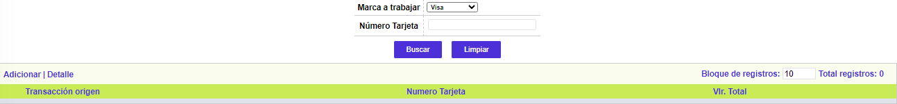
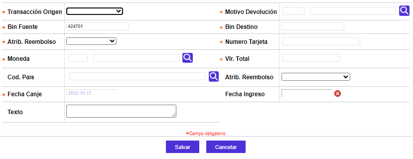

Fee Collection
A través de esta pantalla se ofrece la funcionalidad necesaria para que la entidad pueda enviar transacciones de pagos o cobros, conocidos como miscelaneos o Feed Colletion, estas transacciones se capturan aplicando el botón que aparece en la parte superior de la forma de contracargos MC, no es necesario que este relacionado con un contracargo, es decir que se puede capturar sin que exista información de contracargo, las transacciones capturadas se pueden ver en la consulta global de intercambio en la pestaña de intercambio.

Adicionar: Se pueden realizar consultas a través de la siguiente lista de valores:

|
Transacción origen |
Campo con lista de valores que permite seleccionar la transacción origen para el pago o cobro que se va a enviar, en el campo siguiente aparece la descripción de la transacción. |
|
Motivo Devolución |
Campo que posee lista de valores adjunta de la que debe seleccionarse el código de razón o motivo de devolución, en el campo adjunto aparecera la descripción del motivo. |
|
Bin Fuente |
Campo en el que aparece el bin fuente o generador del cobro o pago, en este caso debe ser el bin que utiliza la entidad como compensador. |
|
Bin Destino |
Campo en el que se debe digitar el bin del banco o entidad destino del cobro o pago. |
|
Atrib. Rembolso |
Campo que despliega lista de valores para algunas transacciones, muestra algunos atributos especiales de la transacción. |
|
Numero Tarjeta |
Campo en el que se digita el numero de la tarjeta que genera o a la que se va a aplicar el pago o cobro, este campo es obligatorio solo para algunas transacciones. |
|
Moneda |
Campo con lista de valores que permite seleccionar el código de moneda en el que se va enviar el valor de la transacción, en el campo siguiente aparecera el nombre o descripción de la moneda seleccionada. |
|
Valor Total |
Campo en el que se debe digitar el valor total del pago o cobro a enviar. |
|
Código país |
Campo opcional con lista de valores, permite seleccionar el código del país, en el campo siguiente aparecera el nombre del país. |
|
Atrib. Reembolso |
Campo que despliega lista de valores para algunas transacciones, muestra algunos atributos especiales de la transacción. |
|
Fecha Canje |
Campo que despliega la fecha del sistema y que corresponde a la fecha de canje, este dato se puede modificar, la fecha es en formato DD-MM-YYYY |
|
Fecha Ingreso |
Campo de salida que se diligencia automáticamente con la fecha del sistema, en formato DD-MM-YYYY, no permite modificación. |
|
Texto |
Campo en el que se debe ingresar el texto que describa el motivo de cobro o pago de la transacción, dependiendo de la transacción puede traer lista de valores. |
Ingresar | Datos complementarios | Adicionar notas débito | Transacciones asociadas